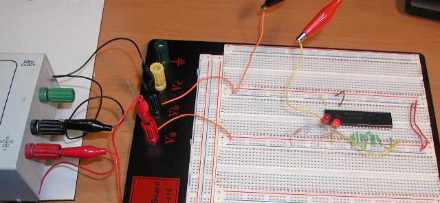
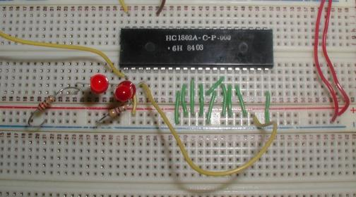

This is a recreation of the original test I ran sometime in 1977 with my brand new 1802. I wanted to try something that would require a minimum amount of work and see some sort of result.
1) Wire 0x7B by directly connecting D0 through D7 to the appropriate +5V and GND signals
2) Connect an LED and resistor to the Q signal
3) Connected up the power pins
4) using wires connected to the control lines reset the CPU and then set it to run
5) Apply pulse from signal generator (original test used a de-bounced switch) to CLOCK line
After 20 or so clock pulses the LED connected to the Q line lights up


1802 with Led connected to Q signal and
LED connected to the CLOCK input signal.
Alligator clips are from pulse generator
connected to CLOCK.
The Q LED is on the other LED is pulsing.